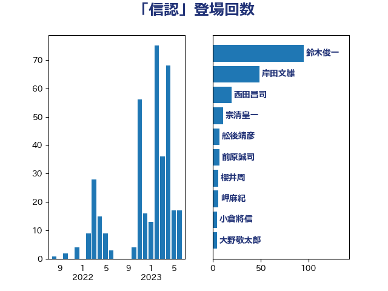

単語「信認」

| 鈴木俊一 | 自由民主党 | 95 回 |
| 岸田文雄 | 自由民主党 | 49 回 |
| 西田昌司 | 自由民主党 | 20 回 |
| 宗清皇一 | 自由民主党 | 11 回 |
| 舩後靖彦 | れいわ新選組 | 7 回 |
| 前原誠司 | 国民民主党 | 7 回 |
| 櫻井周 | 立憲民主党 | 6 回 |
| 岬麻紀 | 日本維新の会 | 6 回 |
| 小倉將信 | 自由民主党 | 5 回 |
| 大野敬太郎 | 自由民主党 | 5 回 |
| 道下大樹 | 立憲民主党 | 4 回 |
| 藤巻健太 | 日本維新の会 | 4 回 |
| 秋野公造 | 公明党 | 4 回 |
| 井上貴博 | 自由民主党 | 4 回 |
| 越智隆雄 | 自由民主党 | 3 回 |
| 江田憲司 | 立憲民主党 | 3 回 |
| 永岡桂子 | 自由民主党 | 3 回 |
| 末松信介 | 自由民主党 | 3 回 |
| 掘井健智 | 日本維新の会 | 3 回 |
| 後藤茂之 | 自由民主党 | 3 回 |
| 平沼正二郎 | 自由民主党 | 3 回 |
| 大家敏志 | 自由民主党 | 3 回 |
| 牧原秀樹 | 自由民主党 | 2 回 |
| 浅田均 | 日本維新の会 | 2 回 |
| 大串正樹 | 自由民主党 | 2 回 |
| 古賀友一郎 | 自由民主党 | 2 回 |
| 原口一博 | 立憲民主党 | 2 回 |
| 加藤勝信 | 自由民主党 | 2 回 |
| 青山繁晴 | 自由民主党 | 1 回 |
| 阿部司 | 日本維新の会 | 1 回 |
| 長友慎治 | 国民民主党 | 1 回 |
| 野田佳彦 | 立憲民主党 | 1 回 |
| 近藤和也 | 立憲民主党 | 1 回 |
| 西村康稔 | 自由民主党 | 1 回 |
| 藤岡隆雄 | 立憲民主党 | 1 回 |
| 稲津久 | 公明党 | 1 回 |
| 福田昭夫 | 立憲民主党 | 1 回 |
| 石川博崇 | 公明党 | 1 回 |
| 津島淳 | 自由民主党 | 1 回 |
| 柴愼一 | 立憲民主党 | 1 回 |
| 林芳正 | 自由民主党 | 1 回 |
| 東徹 | 日本維新の会 | 1 回 |
| 岡本三成 | 公明党 | 1 回 |
| 小野泰輔 | 日本維新の会 | 1 回 |
| 小川淳也 | 立憲民主党 | 1 回 |
| 大西健介 | 立憲民主党 | 1 回 |
| 大塚耕平 | 国民民主党 | 1 回 |
| 國場幸之助 | 自由民主党 | 1 回 |
| 古川禎久 | 自由民主党 | 1 回 |
| 住吉寛紀 | 日本維新の会 | 1 回 |
| 中西祐介 | 自由民主党 | 1 回 |
| 中西健治 | 自由民主党 | 1 回 |
| 中田宏 | 自由民主党 | 1 回 |
| 中川正春 | 立憲民主党 | 1 回 |
| 三浦信祐 | 公明党 | 1 回 |